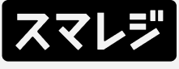

APIでデータを繋ぐプラットフォーム AIと事業を 強くする


AIは、つながったデータの分だけ賢くなる。連携が、AIの燃料になる。
AIは、つながったデータの分だけ賢くなる。連携が、AIの燃料になる。


HTTPで叩くだけ。言語もフレームワークも選ばず、いまあるバックエンドからそのまま呼び出せます。認証はキー1本。
手元のターミナルで試して、そのままCI/CDへ。ユーザー単位で実行ログを追えるので、運用も開発の延長で回せます。
連携画面ごと、自社プロダクトに埋め込めます。数行置くだけで、ユーザーが自分でSaaSをつなげるようになります。